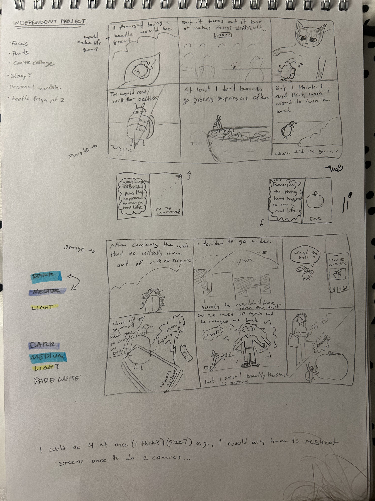
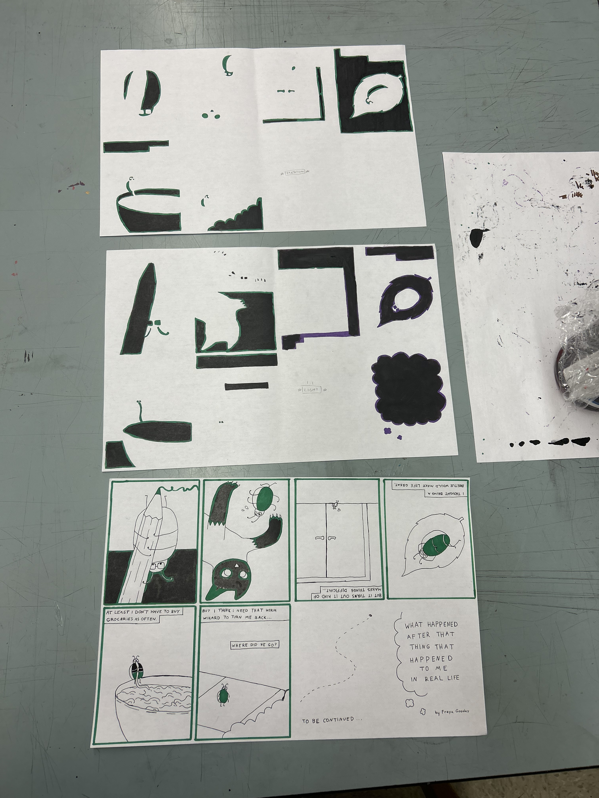
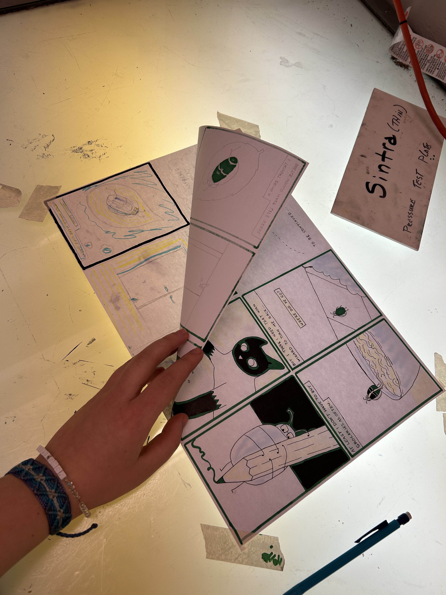
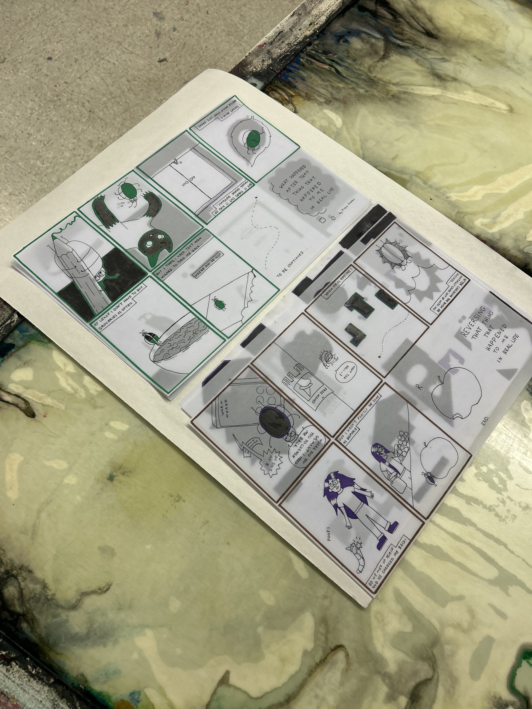
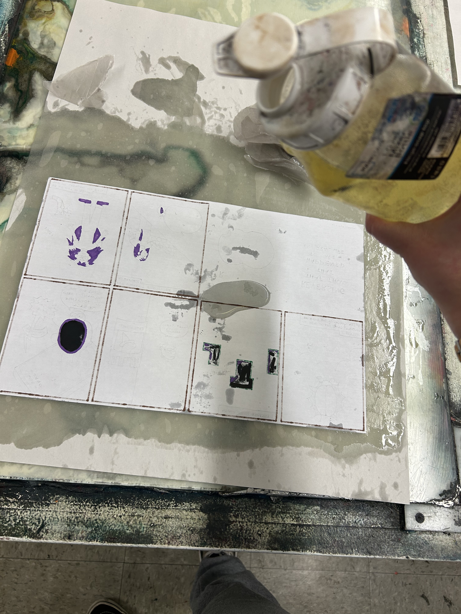

Come up with an idea by sketching out some images. You can work digitally or traditionally.
Screen printing allows you to print one color at a time in layers. Once you have your idea, you will want to create a separate drawing for each color you plan to print with. In my example, I will be printing three colors/layers. I created my linework layer first, then using that as a guide, I used the lightbox to fill in the places that I wanted my two other colors on a respective new sheet of paper. Make sure your drawings are on thin, cheap paper such as newsprint or printer paper. Draw each layer with paint pens or pigment pens. You want your media to be opaque. I will be using a combination of soft pencil, pigment pens, and paint markers.
 Once your drawings are completely dry (I would recommend waiting about 20 minutes or more), bring them over to the glass tables at the back of the studio. Rub enough oil into your paper to saturate both sides. If you use pencil, oil the back of the paper first, and then the front carefully to avoid smudging the graphite. Then, blot your paper with newsprint to get as much excess oil off as possible. Now your paper will be transparent!
Be sure to store your transparencies in a few sheets of newsprint to absorb oil that will continue to seep out over time. Do not store oiled transparencies in contact with your good paper.
 